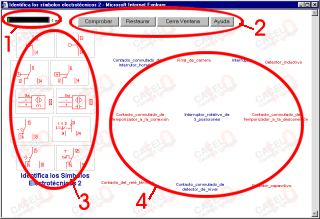

Uso del entorno en los juegos de identificación de símbolos electrotécnicos
El entorno
1- Barra indicadora de tiempo transcurrido
2- Botones de control:
Comprobar: Verifica si los simbolos han sido asociados corectamente.
Restaurar: Coloca los símbolos de nuevo en el lugar de origen.
Cerrar ventana: Permite salir de la aplicación.
Ayuda: Muestra una ventana con una breve ayuda.
3- Simbolos desplazables.
4- Nombres destino para los símbolos

Procedimiento:
1-Arrastrar
los símbolos situados a la izquierda encima de cada uno de los nombres
situados a la derecha
2-Presionar
el Botón "Comprobar" para ver si las asociaciones son correctas.
Para comenzar de nuevo, pulsar "Restaurar".
El tiempo máximo de la prueba es 1 minuto.